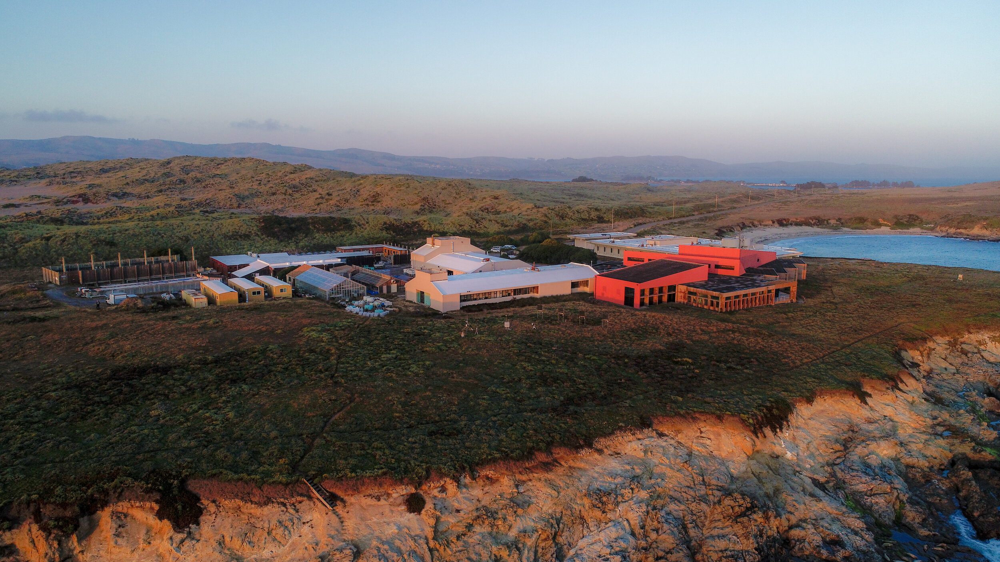
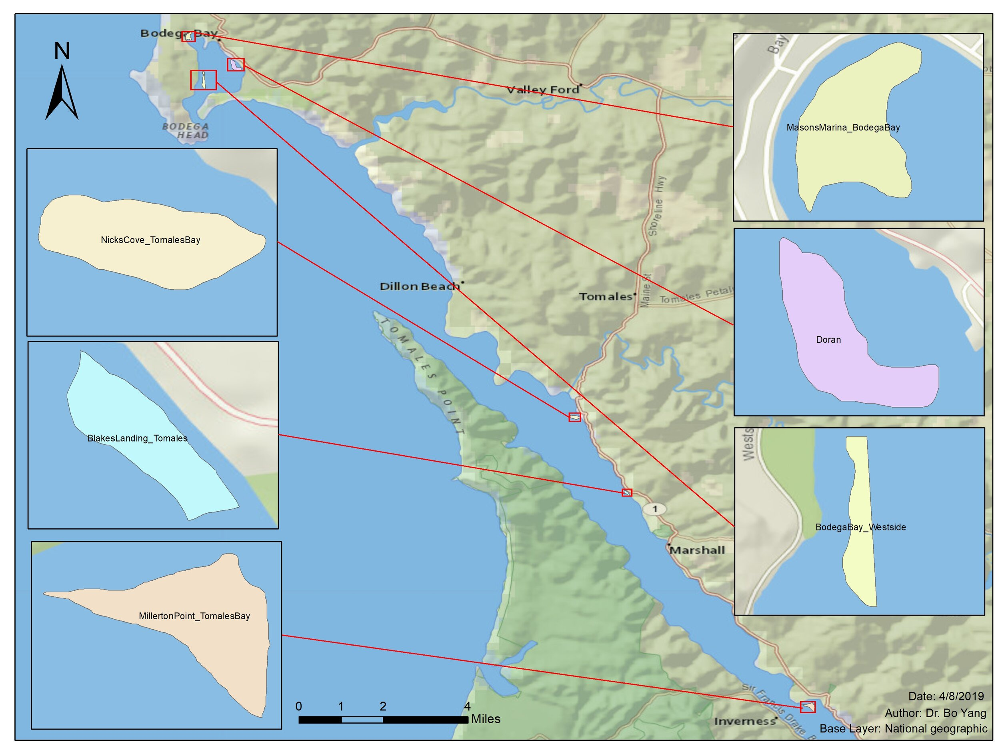
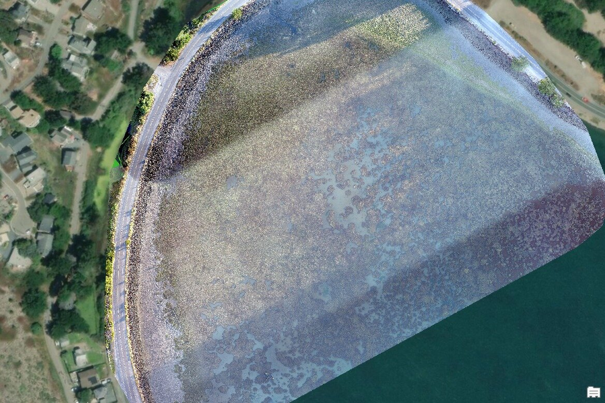

4 minutes read

The Project During June and July of 2019, Citizen Science GIS team members Dr. Bo Yang, Michael Feinman, and Hunter Searson traveled along the US Pacific Coast to coordinate drone research with multiple institutions. This research project with $1.3 million worth of funding from the National Science Foundation, is well underway.
Most recently, Bo and Michael worked alongside researchers from University of California, Davis at the Boedga Marine Laboratory. At this remote location, 2 hours north of San Francisco, Citizen Science GIS team members worked with Dr. Jay Stachowiczand members of his lab throughout the week.
Pictured: Naomi Murray, Deanna Betty, Michael Feinman, Jay Stachowicz, Bo Yang
Before Bo and Michael arrived in California, many months of pre-planning was required to coordinate the trip. They planned around obstacles like FAA restrictions, local regulations, and equipment needs. However, they couldn't plan for hurdles like bad weather, large Independence Day crowds, and technical difficulties.

Drone mapping sites around Bodega Bay, CA
Flight restriction (yellow) with the mapping area (blue) for the Millerton eelgrass site The week of research commenced when Michael and Bo arrived at the Bodega Marine Laboratory on July 2, 2019. After going over the week's plan for various fieldwork sites, the team was ready to mobilize the following morning.
Michael with drone - Westside Park
Sunrise over shipwreck - Mason's Marina
Bo flying drone at Millerton Point

Mason's Marina orthomosaic with stunning water clarity Training Today, For Research Tomorrow After the first day of field work, Michael worked with Jay, Deanna Beatty and Collin Gross to learn the ins-and-outs of operating the DJI Phantom 4 Pro v2. Michael taught from his 3+ years of drone experience, and went over everything from preparing the drone for flight to flying the drone itself. After the three got comfortable with the controls, they each got a quick picture with the drone.
After a rigorous training with hands-on drone training, Bo spent 3 hours with the group. An expert in remote sensing and GIS, Bo went over drone imagery processing and GIS analysis as well as the discussion about the drone application on eelgrass research. Eventually, each university that receives training from Bo and Michael will be able to independently run their own drone and post-processing operation.
Holidays Don't Stop Science
The newly christened and patriotic Bodega Marine Laboratory drone on July 4th. Eelgrass isn't going anywhere on Independence Day... for now. The team set out at 5:30 A.M. to arrive at the first site of the day, Millerton Point.
Sign at Millerton Point During our last day in Bodega, the team started the day by mapping the coastline of BML. Although not a part of grant work, this data aids a separate project that Jay is working on with his team. After completing mapping at the site, Michael and Bo had an awesome chance to view seals on the coast.
Watch the video below to experience the encounter from an aerial perspective:
The Sun Sets On Another Field Site Jay Stachowicz and his team from the University of California, Davis, served as the third out of five stops along the 2019 field work schedule. View posts about Washington and Oregon.
The sun sets over the Bodega Marina Laboratory in Bodega Bay, California Working with scientists from all over the US Pacific Coast has been an eye-opening experience, and we can't wait to share more data from the trips with the Citizen Science GIS community.
Keep updated with everything Citizen Science GIS! We keep our Facebook, Twitter, Instagram, LinkedIn pages up-to-date. Show us your support by following our day-to-day work on our platforms.
Updated: July 16, 2019